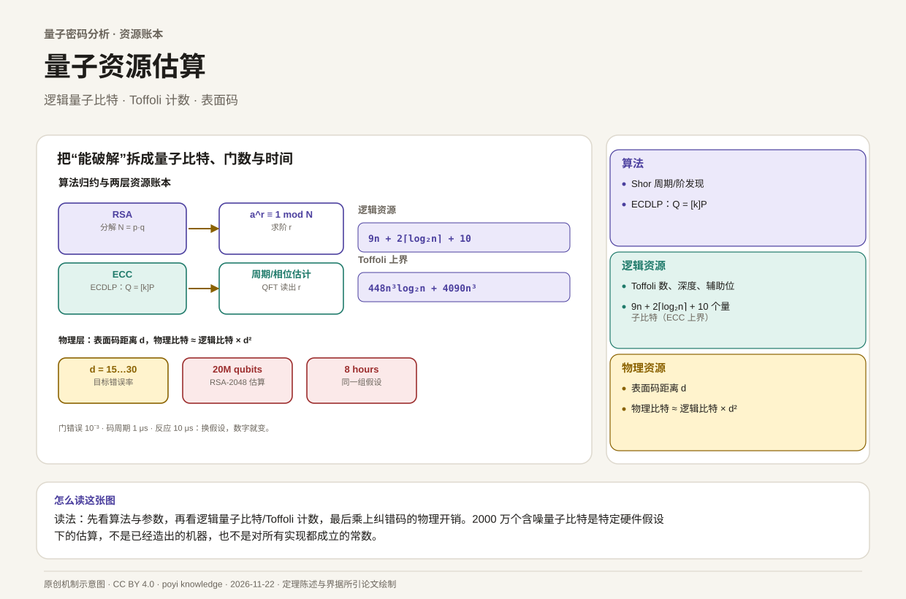
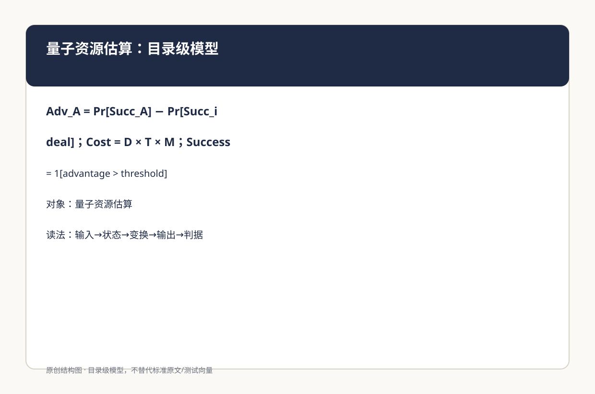

原理与机制
攻击：量子资源估算（Quantum Resource Estimation）。### 从算法到资源
Shor 算法把整数分解归约为求阶：随机选 a，找最小的 r>0 使 a^r ≡ 1 (mod N)，再由 gcd(a^{r/2}±1,N) 得到因子。椭圆曲线离散对数则归约为求周期：给定 Q=[k]P，寻找 k。量子线路的核心是模幂/点加的受控版本、量子傅里叶变换和逆运算。### 资源账本
资源估算不是只报“需要多少量子比特”。它至少要分开：逻辑量子比特数、Toffoli（或 T）门数、线路深度、辅助位数量、测量与初始化次数，以及为容错纠错准备的物理量子比特和运行时间。对 n 位素域上的 ECC，Roetteler 等给出上界约
9n + 2⌈log₂n⌉ + 10 个逻辑量子比特， 448 n³ log₂n + 4090 n³ 个 Toffoli 门。### 物理开销
表面码把每个逻辑量子比特编码到 d×d 的物理网格，距离 d 由目标错误率决定；物理比特数大致按 d² 增长，运行时间受码周期、测量反馈和魔态蒸馏限制。Gidney 与 Ekerå 的 RSA-2048 估算使用 20 million noisy qubits、8 小时，并明确假设门错误率 10⁻³、码周期 1 μs、反应时间 10 μs。换一组假设，数字就会变。

为什么重要
“量子计算机能破解 RSA”是算法层结论；“某年之前能破解 2048 位 RSA”需要物理层账本。资源估算把两者分开，让迁移计划能讨论参数、时间窗和不确定性，而不是只围绕一句口号。### 对密码迁移的意义
NIST 后量子标准的迁移不是等到量子计算机出现才开始。密钥大小、证书链、协议握手和硬件加速都要提前改造。资源估算帮助判断哪些参数最危险（例如 ECC 通常比同安全等级的 RSA 更省量子比特），以及哪些“量子安全”方案只是换了数学假设。### 不是威胁预测
资源估算给出的是在明确硬件假设下的上界或下界，不是日历预测。它不能说明某台机器已经存在，也不能把实验室演示直接外推为互联网级攻击。
应用与实例
1.明确要保护的算法、密钥长度、证书有效期和数据保密期限。2.读取原论文的逻辑资源表，记录量子比特、Toffoli 数、深度和辅助位。3.按目标硬件的误差率、码距、码周期和魔态蒸馏成本换算物理资源。4.用多个独立估算做区间，不把一个点估计当成确定日期。5.把结果接入密码敏捷性计划：混合密钥交换、证书轮换、性能预算和回滚方案。### 标准与评估
NIST 后量子标准化、国家级迁移路线和产业评估报告都把资源估算作为输入；它们关注的是“在多长的时间窗内、以多大代价”完成迁移，而不是证明某个具体机器不存在。

边界与攻击面
1.把逻辑量子比特数当成物理量子比特数：忽略纠错开销会低估几个数量级。2.把渐近复杂度当成常数：O(n³) 前面的系数、辅助位和数据移动都影响现实资源。3.忽略容错假设：门错误率、码距、测量速度、魔态蒸馏和 connectivity 都会改变账本。4.把算法上界当成下界：上界说明“不超过”，不说明“至少需要”。5.把一次实验室演示外推为大规模攻击：小规模线路不等于可扩展的容错机器。6.忽略经典部分：数据收集、线性代数、后处理和时间窗同样消耗资源。资源估算不是安全证明，也不是威胁预言。它是一套可复核的成本模型；任何数字都必须连同算法、参数、纠错方案和硬件假设一起引用，脱离假设的“多少量子比特”没有意义。
历史与背景
Shor 在 1994 年给出多项式时间的量子分解与离散对数算法，把 RSA/ECC 的量子威胁从猜测变成算法事实。早期估算关注逻辑量子比特和门数，随后研究逐渐把容错、表面码、魔态蒸馏和并行性纳入账本。### 现代估算
Roetteler、Naehrig、Svore 与 Lauter 在 2017 年给出 ECC 离散对数的门级资源上界，并指出在可比安全等级下 ECC 通常比 RSA 需要更少量子比特。Gidney 与 Ekerå 在 2021 年把 RSA-2048 的估算推进到“8 小时、20 million noisy qubits”的工程化场景，同时明确列出一组硬件假设。
逐步示例与核验
形式模型与复算步骤
[Q=\Theta!\left(\sqrt{|\mathcal{K}|}\right)=\Theta(2^{\kappa/2})]
量子资源估算的公开参数、密钥/随机数与消息；变量说明：κ 密钥位数，Q 量子查询复杂度。1.把搜索问题写成 oracle。2.执行 Grover 迭代。3.测量并验证候选解。边界：公式只覆盖已登记的参数与假设；参数取值、标准版本和实现细节仍以来源为准。
参考出处
- Wikipedia search entry for 量子资源估算. https://zh.wikipedia.org/w/index.php?search=%E9%87%8F%E5%AD%90%E8%B5%84%E6%BA%90%E4%BC%B0%E7%AE%97
- Handbook of Applied Cryptography (Menezes, van Oorschot, Vanstone). https://www.cacr.math.uwaterloo.ca/hac/